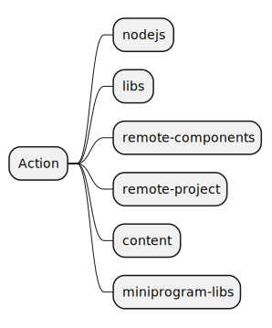
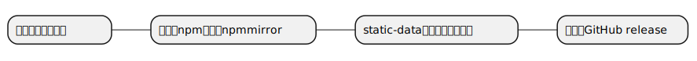
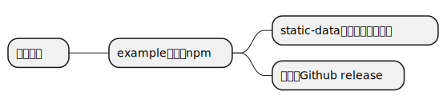
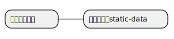
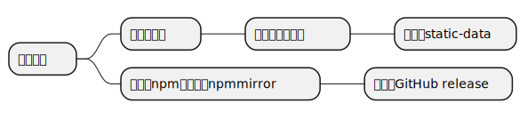

在KneUnion中托管的项目目前可以分为3种：
之前，我通过github actions完成了上述操作，但是存在以下的问题：
接下来我开始构思改造工作，首先，我想先创建一个项目，专门用来放置其他项目产生的数据，可以由其他项目的action向该项目推送执行结果，其他除ued之外的项目不需要自己配置gh-pages。然后通过GitHub action的reused workflow和自定义action来完成所有类型的构建工作。
首先，将现有项目重新分为以下类型:
然后设计出没从类型的构建过程：
nodejs: 不需要构建的npm package
libs：需要构建的npm package，示例需要自动发布到ued

remote-components: 远程组件项目，需要构建，示例自动发布到ued
remote-project：ued为一个典型的remote-project项目
content: 管理内容的项目，比如blog项目
miniprogram-libs：小程序组件库，需要构建并且示例自动发布到ued
设计完所有的构建过程之后，将公共部分分别实现，然后将所有workflow发布到actions项目中
然后实现不同类型的脚手架模板，让其中的actions workflow引用 actions项目中对应项目的workflow实现
当对应类型的actions需要更新时，只需要集中在actions项目维护就可以做到整个系统的所有项目的同步升级